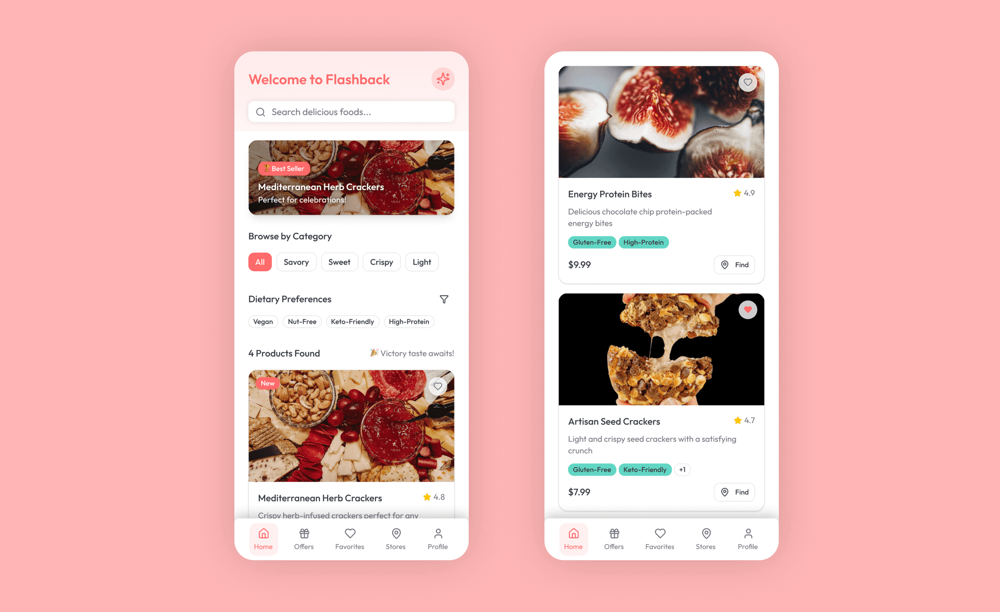
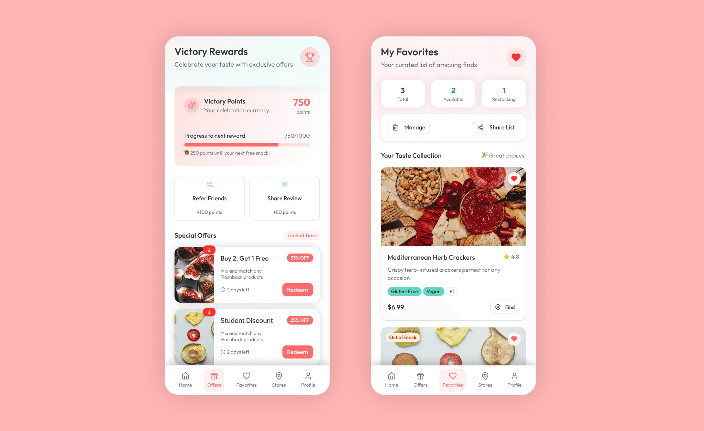
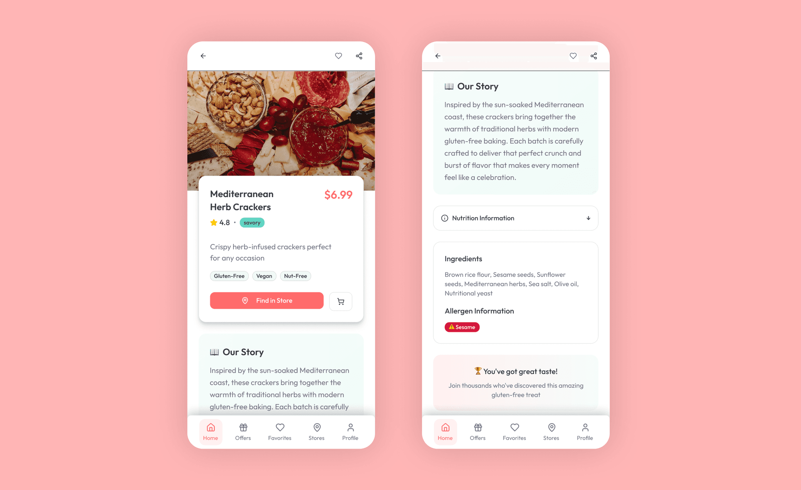
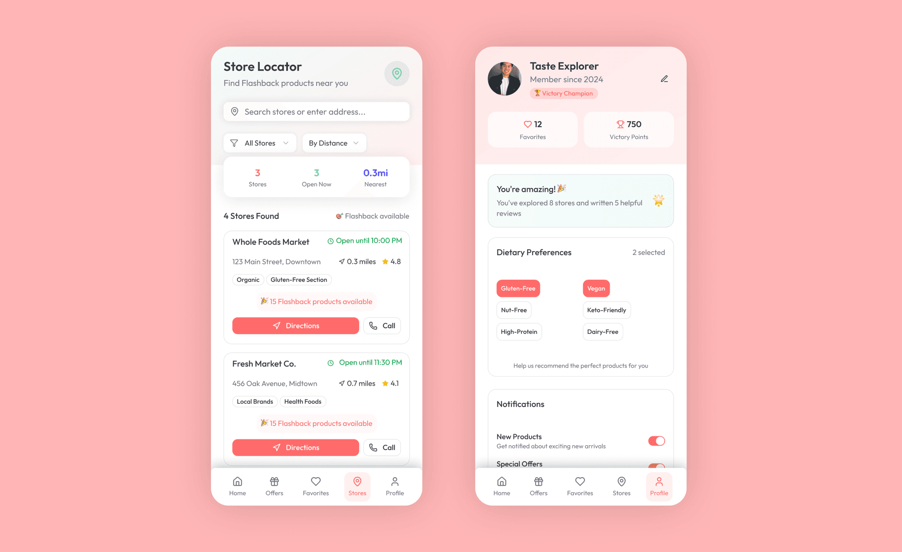

The app Flashback was inspired as a personal homage to my earlier branding work with a local bakery in my hometown. The name "Flashback" signifies a nostalgic blast from my past experiences, blending the warmth and care I witnessed in that project into the digital world. With Flashback, the goal was to create a mobile app that reflects kindness, attention to detail, and the joyful spirit of victory associated with healthy gluten-free snacking.
Full Prototype: https://dial-clever-86042597.figma.site




Personas
Nina, 25 – Fitness Enthusiast
An active young woman focused on maintaining her health and energy through nutritious gluten-free snacks. She values clear nutritional information and a smooth shopping experience.
Arjun, 22 – Budget-Conscious Student
Enjoys discovering new and tasty finger-food options without breaking the bank. Likes tracking offers, sharing favorites with friends, and using easy wishlist management.
Alicia, 30 – Social Planner
Organizes get-togethers and needs dependable, allergy-safe finger-food options. Prefers simple ways to build shopping lists and verify store availability.
Problem Statement
- The market lacks engaging and friendly digital experiences for gluten-free snack shoppers.
- Consumers want easy access to product details, availability, and personalized offers without cumbersome navigation.
- Many existing apps do not connect the joy and kindness intrinsic to local bakery experiences with digital convenience.
- Ensuring trustworthy, inclusive messaging and clear dietary info remains challenging.
Competitive Analysis
- Find Me Gluten Free: Strong on restaurant and food venue guidance but limited in product-based features or joyful brand personality.
- Live Well Gluten Free: Robust dietary filtering with practical design, but less engaging and lacking community elements.
- Popular Food Delivery Apps (Zomato, Uber Eats): Extensive catalogs and delivery-oriented, but not specialized for gluten-free snack discovery and retailer integration.
- Bakery-specific apps: Usually focused on orders/delivery with less emphasis on lifestyle, festivity, and dietary inclusivity.
Solution & Design Highlights
- Homepage featuring seasonal and “Victory Picks” finger-foods with cheerful filtering options.
- Detailed product pages with allergy info, ingredient stories, and local store availability maps.
- Offers and Rewards containing student discounts, bundle deals, and loyalty points with animated celebrations.
- Wishlist to track favorites and supply notifications for availability or promotions.
- Profile page with personalized settings, dietary preference management, and purchase history.
Navigation:
- Intuitive bottom tab bar for core features.
- Hamburger menu with secondary settings like preferences, language, location, and accessibility options.
Visual Style:
- Inspired by Airbnb: pastel palette with warm oranges, fresh greens, creamy neutrals, generous white space, and rounded UI components.
- Friendly, approachable tone of voice imbuing kindness and accomplishment.
Design Philosophy
- Translate bakery-inspired warmth and attention to detail into the digital realm.
- Use playful and clear design elements to engage a young, health-conscious demographic.
- Facilitate effortless product discovery, social sharing, and loyalty building.
- Foster a strong sense of community and personal triumph through design and messaging.
Outcome
Flashback is designed as a joyful, inclusive, and reliable app that brings a blast-from-the-past charm to the modern gluten-free snack shopping experience. It balances detailed, trustworthy product info with friendly interfaces and festive rewards, empowering users to feel victorious about their food choices every day.